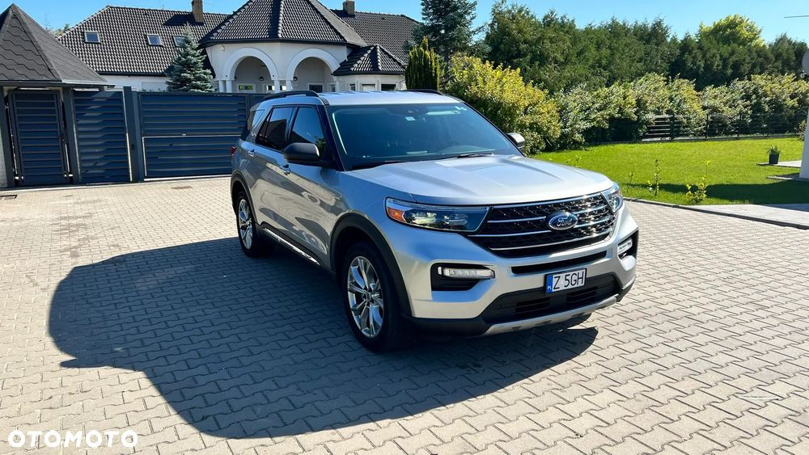
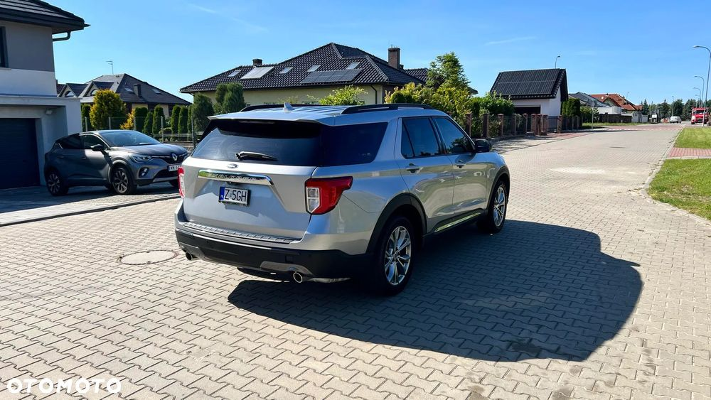
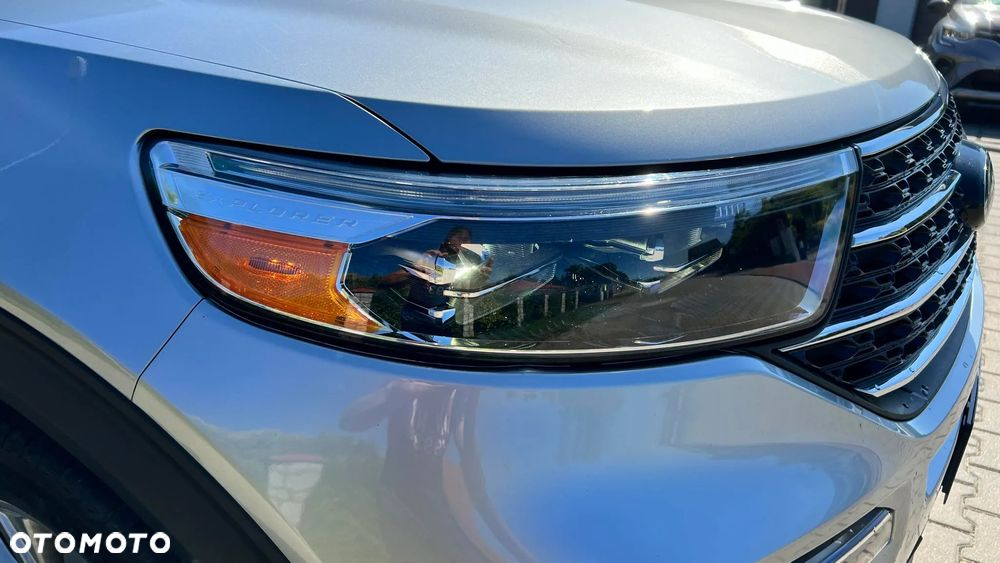
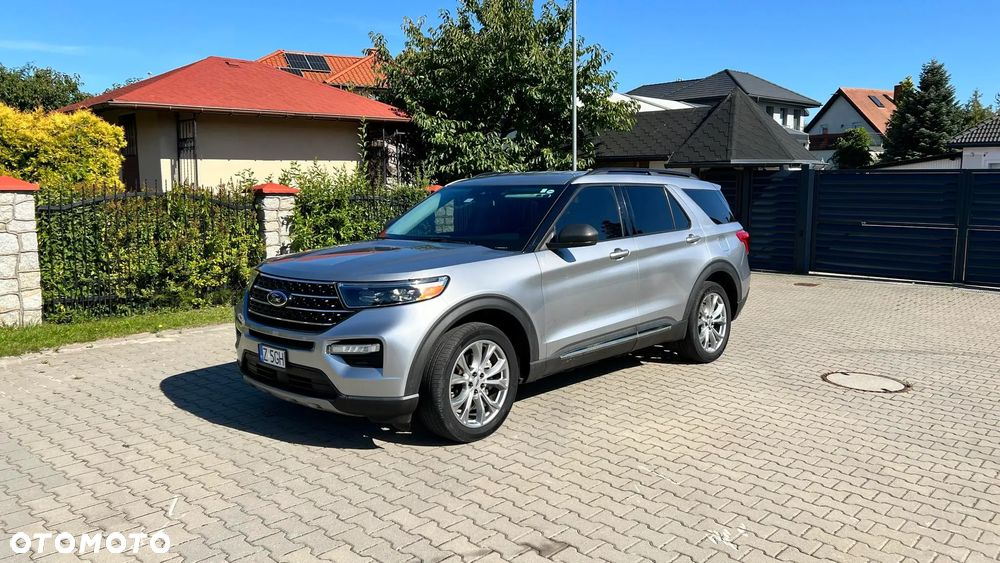
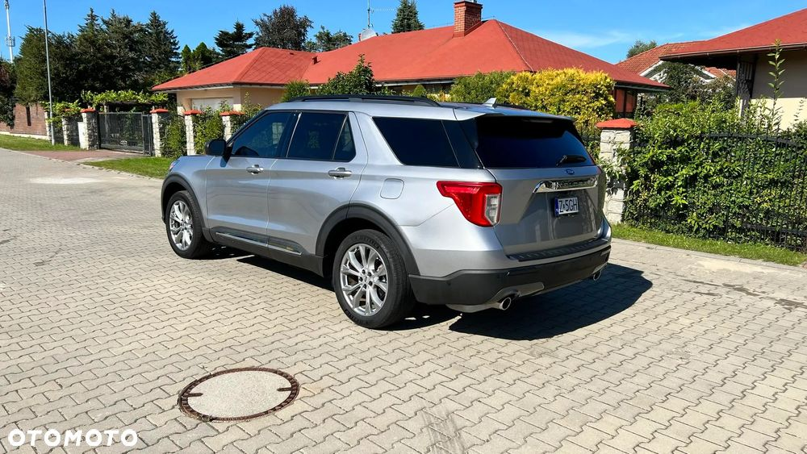
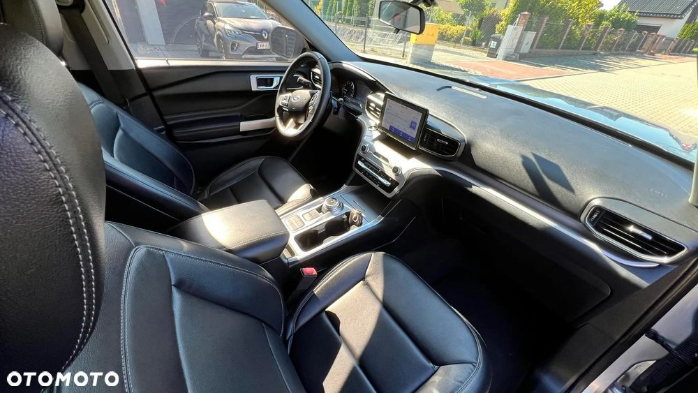
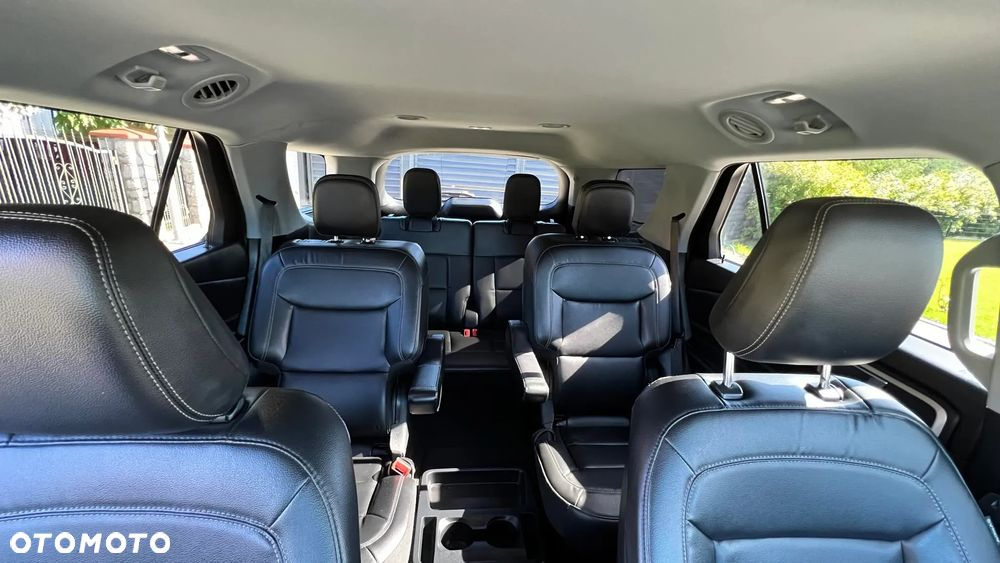
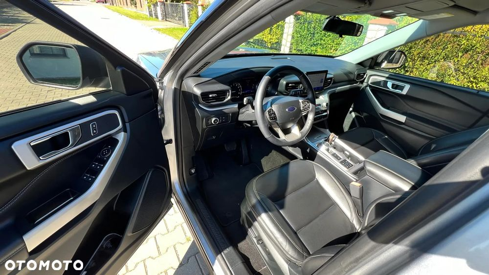
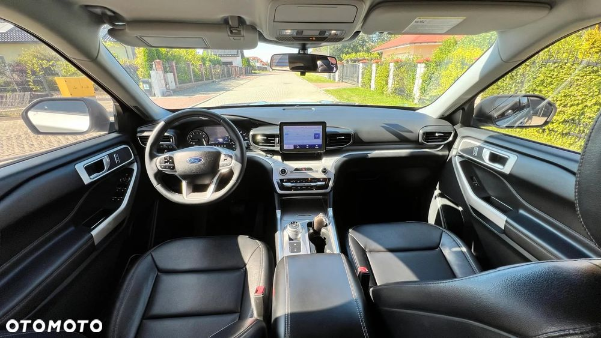
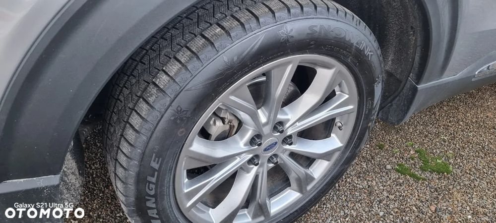

Wyjątkowa Okazja!
Ford Explorer 2020 - Luksusowy SUV, 6-Osobowy, Doskonałe Wyposażenie, Tylko 69,000km.
Sprzedam elegancki i wszechstronny SUV rodzinny w idealnym stanie, z bogatym wyposażeniem i niskim przebiegiem!
Szczegóły Pojazdu:
Marka i Model: Ford Explorer
Rok Produkcji: 2020
Pierwsza Rejestracja w Kraju: 01.01.2020
Pojemność Silnika: 2,3 litra (BENZYNA)
Moc: 305 KM
Skrzynia Biegów: Automatyczna
Przebieg: Tylko 69.000 km
Kolor: Piękny srebrny
Komfort i Technologia:
Automatyczna Klimatyzacja: Zarówno z przodu, jak i z tyłu
Piękne, skórzane wnętrze
Kamery 360 dookoła pojazdu, kamera cofania.
Wybór Trybów Jazdy: Eco, ślizga nawierzchnia, sport i więcej
Otwieranie Drzwi za Pomocą Kodu: Nowoczesne i wygodne rozwiązanie
Nawigacja z Aktualną Mapą Europy: Niezawodna i zawsze aktualna
Tempomat adaptacyjny
Asystent pasa ruchu i system ostrzegania przed kolizją
Reflektory LED z funkcją automatycznego włączania
Bezpieczeństwo:
Stan Techniczny: W pełni sprawny i gotowy do jazdy
Ważna Polisa OC
Aktualne Badania Techniczne
Stan Pojazdu:
Techniczny i Wizualny: Bardzo dobry
Komfort: Bezpieczny i wygodny dla całej rodziny
Dlaczego warto?
Jeden Właściciel w Kraju
Niski Przebieg
Doskonałe Wyposażenie
Regularnie Serwisowany i Utrzymany w Idealnym Stanie
Auto w idealnym stanie, nie potrzebuje dodatkowego wkładu finansowego
Dodatkowe informacje: Explorer jest bardzo przestronny, idealny dla rodzin lub osób potrzebujących dużo miejsca. Świetnie sprawdza się zarówno w mieście, jak i na dłuższych trasach. Dynamiczny silnik zapewnia komfort jazdy i doskonałe osiągi.
Zachęcam do kontaktu i oględzin samochodu na żywo. To wyjątkowa okazja, której nie można przegapić!
Mozliwość sprzedaży przez komis.
